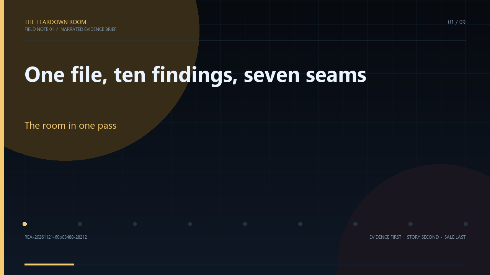
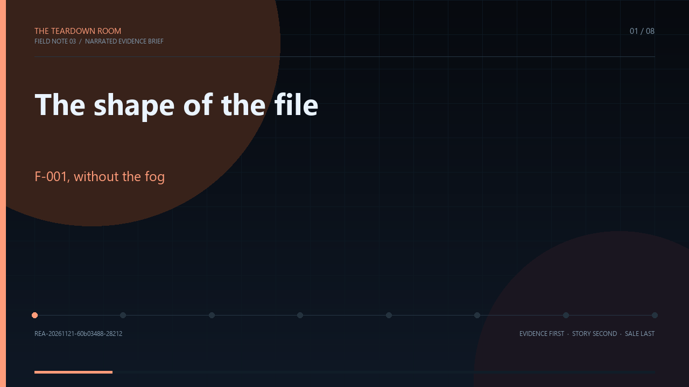
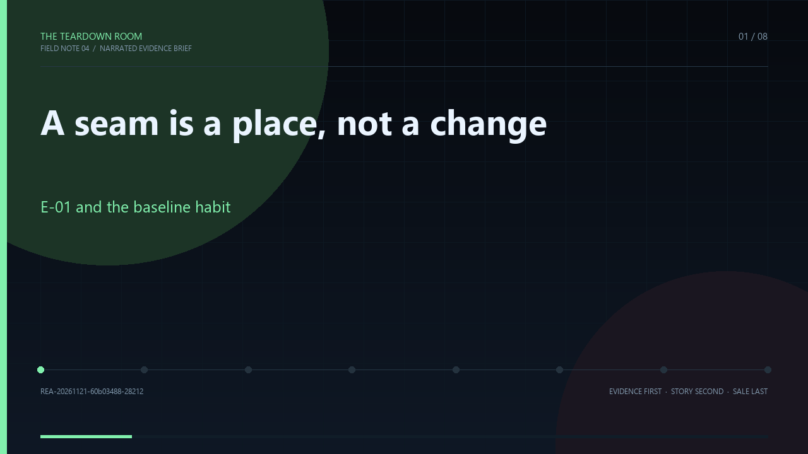
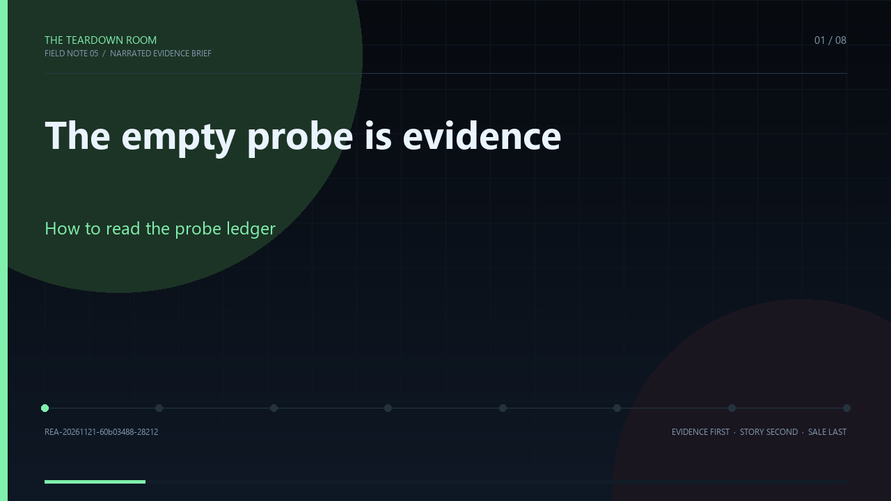
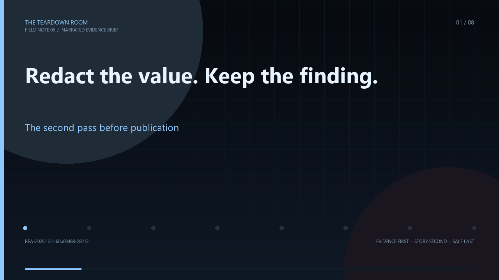
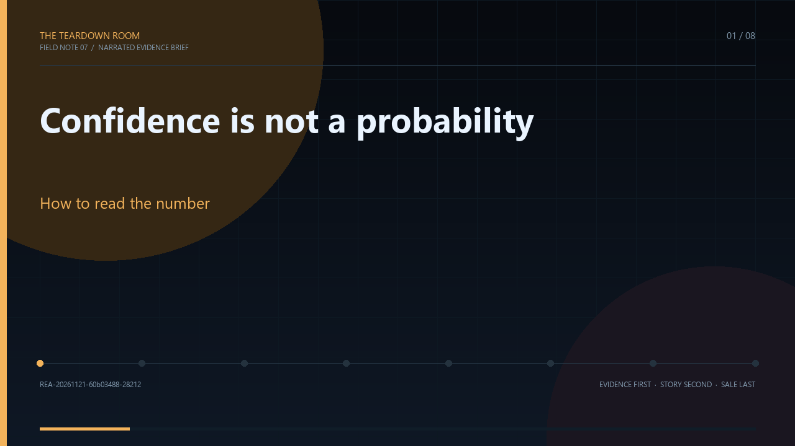
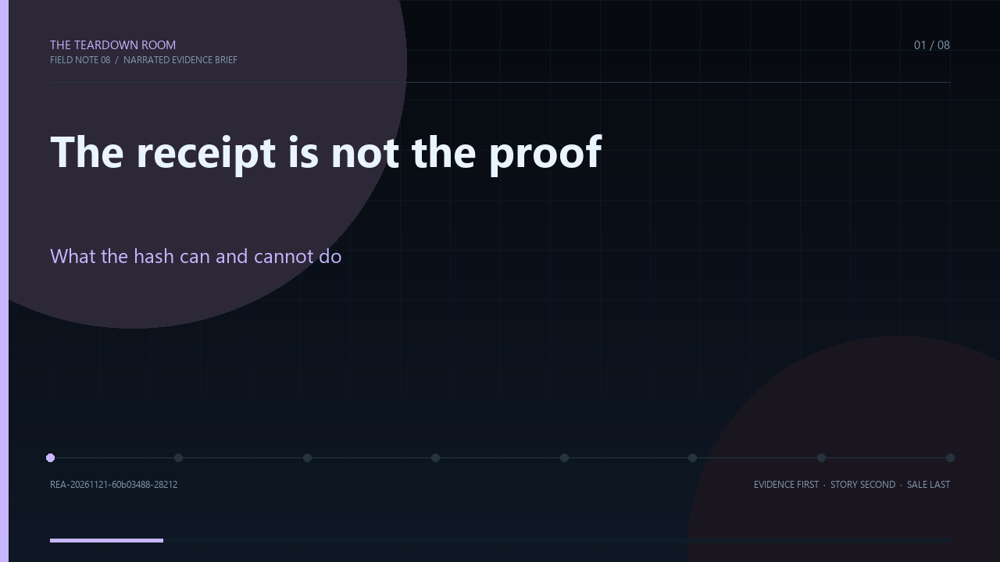
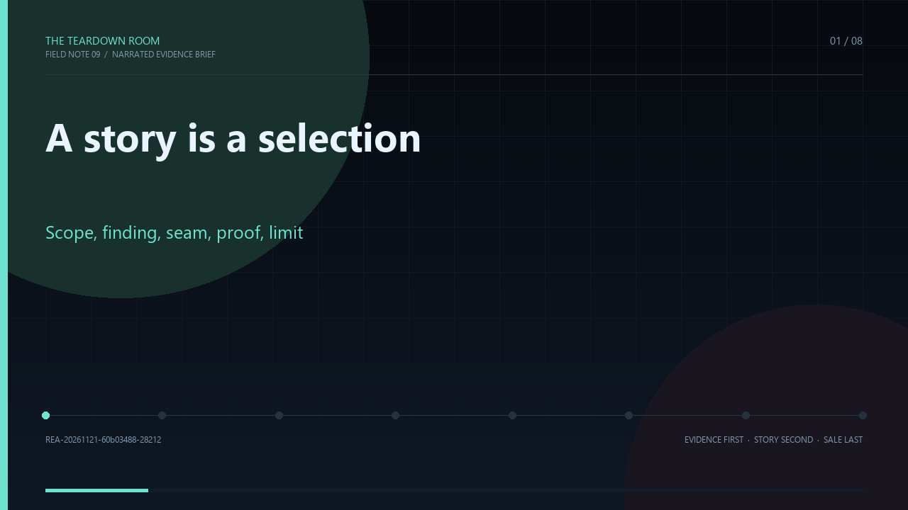
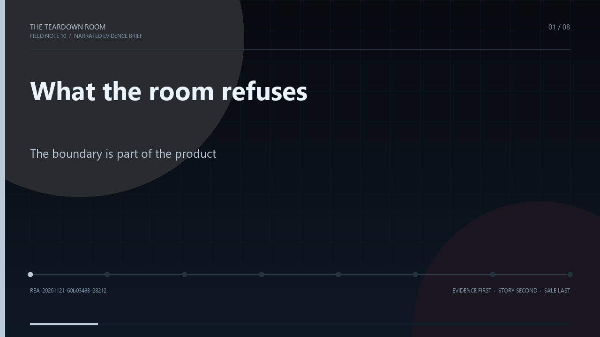

FIELD NOTE 01
One file, ten findings, seven seams
The opening brief. A small owned source tree, a recorded finding, a source seam and the limit. Start here if you want the shape of the room before the detail.
A series of narrated, captioned visual briefs built from the published dossier. Each note has its own subject, card accent and presenter treatment. The detail still lives in the fact files and appendix.
Every note is listed here. Open any card for its player, transcript, captions and downloads.

The opening brief. A small owned source tree, a recorded finding, a source seam and the limit. Start here if you want the shape of the room before the detail.
A finished run is not automatically a story. This note walks the publication gate: the records, the seam, the real target and the human sign-off.

Twelve files, four languages and no binaries. A surface map can be useful without becoming a vulnerability claim. This note shows what the first finding actually records.

The source is the first change surface. The safe path is baseline, edit one module, compare. This note explains what E-01 records and what it still does not prove.

Signal, empty, error, skipped, retry. The status is part of the finding. This note explains why a clean ledger includes the rows that found nothing.

A claim can be public without the secret that proved it. This note covers replacement at the source, the limits of a blur, and the edges that leak.

A confidence score is a recorded judgement, not a truth score. This note separates a direct observation from an inference and shows why the findings are never averaged.

The page carries a SHA-256 hash of the dossier. It ties the story to a record. It does not prove that every conclusion is correct. This note keeps the distinction clear.

The public story is not a diary of every probe. It is an argued path through the strongest evidence. This note shows the five-part spine and what stays in the appendix.

No exploits. No borrowed targets. No invented testimonials. No paid pack. The refusals are not a disclaimer at the bottom; they decide what can be published.
Let's start with one real file. Ten findings, and seven places where behaviour could change, in a source tree we own.
The rule is simple. Evidence first, story second. Every claim keeps its ID, where to find it, how confident we are, and its limit.
The target is a small source tree. Twelve files, three access modes, and written authorisation.
The first finding is its shape. Four languages, no binaries. Think of it as a map, not a vulnerability.
The first seam is the source. Take a baseline, change one module, then compare. A seam is only a place where change is possible. It is not a change we made.
Ten records, seven seams, thirteen probes. No dossier, no publication. Fixtures and demos are refused.
Here's the honest part. This says nothing about runtime beyond the probe. It is not a vulnerability claim, and it is not client work.
The page also carries a receipt. A hash ties the story to the dossier. You don't need to memorise it. It is there so someone else can check.
Read the evidence. Check the locator. Keep the limit. That is the room.
Open the evidence file, then follow the findings and seams into the fact files and the full appendix. The hash is the receipt; it is not a guarantee that every claim is correct.
Open the evidence fileOpen the shot scriptRead the video guideNote 01 MP4 · WebVTT captions · Poster · Transcript
These are external resources, not endorsements and not our work. The Teardown Room is independent; we adapted public patterns such as worked examples, visible evidence and clear limits, not their copy or branding.
The upstream reverse-engineering project and its public guide set. It is a separate MIT-licensed project by morluto.
REA on GitHub ↗rea.tools ↗Two public videos about REA. We did not use their footage, audio or wording in our explainer.
How To Use REA To Clone Any Software In Minutes ↗Reverse Engineer Anything (REA) Explained ↗Search titles and descriptions across the evidence library, fact files, guides and method.